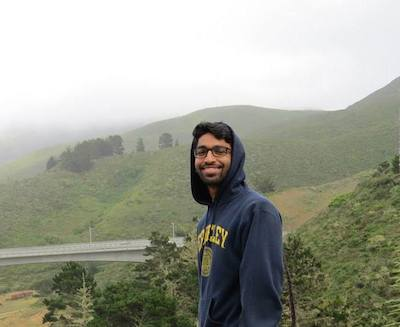

Thanks for dropping by!

A little about me:
I'm currently a sophomore at UC Berkeley where I'm double majoring in Computer Science and Cognitive Science.
I'm passionate about technology--I want to leverage my software engineering and communication skills to make impactful and innovative solutions to real-world problems.
The arts were my first love. More about that elsewhere!
I am always always always trying to explore and expand my mind.
STATELY, PLUMP BUCK MULLIGAN CAME FROM THE STAIRHEAD, bearing a bowl of lather on which a mirror and a razor lay crossed. A yellow dressing gown, ungirdled, was sustained gently-behind him by the mild morning air. He held the bowl aloft and intoned:
-- Introibo ad altare Dei.
Halted, he peered down the dark winding stairs and called up coarsely:
-- Come up, Kinch. Come up, you fearful jesuit.
Solemnly he came forward and mounted the round gunrest. He faced about and blessed gravely thrice the tower, the surrounding country and the awaking mountains. Then, catching sight of Stephen Dedalus, he bent towards him and made rapid crosses in the air, gurgling in his throat and shaking his head. Stephen Dedalus, displeased and sleepy, leaned his arms on the top of the staircase and looked coldly at the shaking gurgling face that blessed him, equine in its length, and at the light untonsured hair, grained and hued like pale oak.
Buck Mulligan peeped an instant under the mirror and then covered the bowl smartly.
-- Back to barracks, he said sternly.